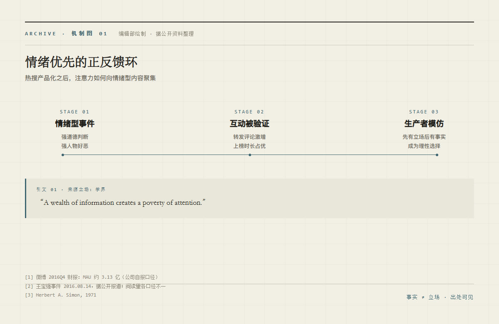

2016年8月14日凌晨，一场全民围观开始了
社会观察 · 一次流量实验的起点
零点二十一分，一份离婚声明发出。六分钟后，评论区落下第一个字：「啊」。
这事发生在十年前，媒体报道过，网上还能翻到当年的评论。下面的文字，数据来自公开报道和学术文章，网友的话逐字照抄当年的评论汇编。当事人的具体指控，一个字都不转述。我们只按公开材料来写。
但这事和今天的你，有关系。你后来在评论区里见到的很多东西，都能从这个夜里找到源头。
那个夏天，全世界都在看里约。没人想得到，抢走奥运会头条的，会是一份家事。
发表评论的人大概也是刚刷到，愣了一下，顺手打出一个「啊」字，又接着往下刷。没立场，没站队。我每次翻到这条评论都觉得，它是整场风暴里最干净的一条。后面那几百万条，再没有这么干净的了。
接下来的一夜，刷微博的人陆续发现不对劲。关注列表莫名丢人，点赞转发全无提示。服务器被冲垮了。
微博运营副总董文俊后来管那晚叫「核爆」，还说了句挺有人味的话：「当大家都在心疼宝宝的时候，我们的服务器也心塞了一下。」CEO 王高飞用小号出来劝：「大家快睡吧……攻城狮们都困了。」没人听。流量曲线在高位趴了整整四天。
还有一个人必须说。河南有个乒乓球教练，恰好也叫宋喆。那晚他睡得早，早上六点爬起来，手机里十几个未接来电，朋友留言就一句：「你的微博炸了。」
一天三十多万条留言涌进来，开头是那个「啊」字，后面全是冲着他名字来的。他发微博问：「谁能解释清楚什么情况！？」配了张一脸懵的图。
最后是微博小秘书手动给他的主页加了行备注：「该网友为乒乓球运动员并非王宝强前经纪人」，才算把这场无妄之灾按停。他没惹任何人。他只是在一个错误的夜晚，拥有一个错误的名字。
数字到今天都吓人。话题阅读 99 亿。同一天开幕的奥运会，204 亿。三个当事人的家事，分走了奥运一半的注意力。
公众号那边更疯。8 月 14 日一天冒出 11069 篇文章，总阅读 1.3 亿，其中 293 篇 10 万+。一周下来，10 万+ 爆文过千。
有个新闻客户端的员工说，平时推送点击率 6%，这条消息，70%。这不是阅读。这是全网停下手里的事，围过来看。
截至 8 月 27 日，声明微博下面 315 万条评论，最热的一条 65 万赞；回应微博下面 489 万条评论，最热的一条 119 万赞。声明收到的是支持，回应收到的是骂声。骂声的热度，是支持的近两倍。
📌 一个值得记住的数字
愤怒比声援值钱。这不是谁的道德问题，是当时那套分发规则算出来的结果。谁的情绪更强，谁就更容易被推到前面。
围过来的人各有各的姿势。有人自嘲：「有钱也能被绿啊！！！吓得我不想去赚钱了！」有人喊口号：「宝宝不哭，今夜我们都是绿巨人。」还有人搬出电影台词：「不就一顶绿帽子吗，退一步海阔天空。」
最好笑的是豆瓣一个叫「教导主任」的用户。他一句骂人的话都没写，只是预言了接下来 48 小时的公众号标题：《宝强老婆为什么会出轨？男人，请学会这5件事！》《成熟的男人，懂得坦然面对背叛》《我从一开始就不看好王宝强的婚姻》。
十年后看这份清单，笑不出来。它不是段子，是模具图。后来十年的内容工业，几乎都是从这套模具里压出来的。
但也有明白人。一位网友写：「轻松一句破骂就能赢得二十七万的点赞。这让人有点迷茫。」另一位看得更深：「这很像在拳击沙袋上挂上仇敌照片的人们，那靶子很无辜，幻想中的敌人才是真实的发泄对象。」
还有一句流传最广：「人们的心里都住着一个马蓉，但嘴上都扮演着王宝强。」这些话当时沉在几百万条评论底下，没人顶。十年过去，倒是它们最经看。
也有人从另一个方向戳。一条长评写道：「自古以来，女人出轨就是天理不容，男人出轨就是全天下男人都会犯的错。成龙被原谅，文章被原谅，陈赫被原谅……道德评判和贞洁观念对女性还是不公平的。」这话你未必同意。但它和那几百万条骂声一样，都是那年的真声音。
得把镜头拉远一点。2013 年热搜刚上线时只是个小功能。到了 2015、2016 年，移动互联网见顶，平台开始抢时长，榜单成了效率最高的武器。2016 年底，微博月活 3.13 亿、日活 1.39 亿。
这个体量下，热搜已经不是功能了。它是全国注意力的总闸门。一件事上不上榜，决定几亿人今天知不知道它。
闸门当时的判定标准朴素得可笑：搜索量。谁搜得多谁排前面。听着很中性，对吧？可你想想，什么样的东西会让人忍不住去搜？
不是最重大的，是最让人坐不住的。政策、制度、专业议题，门槛高，起情绪慢；冲突、背叛、道德审判，天然自带搜索冲动。
产品没作恶。产品只是把「让人坐不住」变成了一种能兑换的资产。资产没有立场。谁来兑换，它就替谁干活。
关系大了。从那个夜晚起，内容生产的顺序开始倒过来。从前是先查事实再形成判断，此后越来越多是先选立场再组织事实。
符合立场的事实被放大，不符合的被悄悄省略。这不是造假，是选择性陈列。可它的传播效率确实更高。你写一篇核对严谨、语气平淡的稿子，就是跑不过一条立场先行、细节煽情的长帖。
所以那个夜晚到底证明了什么？在新的传播条件下，谁能给情绪定价，谁就定义了「发生了什么」。讲道理的人，从那时候就输了起跑线。这两条规矩后来越写越硬，两年后写进了代码。
热评区里其实躺着两种人：狂欢的人，和看穿狂欢、却只能打出一行字的人。此后的很多年，第二种人越来越多，也越来越沉默。
赫伯特·西蒙，1971 年
"A wealth of information creates a poverty of attention."
信息富足，注意力贫困。谁能抢走注意力，谁就定义了「发生了什么」。

▲ 情绪优先的正反馈环（编辑部绘制）
✍️ 那年的评论区里，你是哪一种人？
是跟着刷「绿巨人」的，还是看穿了却没说话的？评论区说说。觉得有用，点个赞、点个「在看」，转给也会刷到这类热点的人。
下一篇：2018 年，这套定价规则被写进了代码。
参考
《Vista看天下》《王宝强婚变冲击波：一场「99亿」级别的全民狂欢》，2016.08.31（99 亿与 204 亿、服务器「核爆」、董文俊与王高飞原话、乒乓球教练宋喆躺枪）；人民网传媒频道《微博的評論轉發功能對群體極化現象的影響》，2016.12（评论数与点赞数）
新榜监测，转引自南方人物周刊《王宝强和他的时代》，2017.02（公众号篇数与阅读量）；王辰瑶《面对热点：全媒体时代的新闻选择与报道策略》（推送点击率）
网友评论汇编：凤凰网神评辑录、新浪新闻网友汇编、微信公号神评论精选。逐字引用，公共语料，引用不代表本文观点；谩骂内容不予转录。
Herbert A. Simon, "Designing Organizations for an Information-Rich World", 1971。微博 2016 年第四季度财报（公司自报口径）。
社会观察，不站任何性别立场。事实据公开来源，未证实指控不转述、不评价。拆解规则是为了理解，不是行动指南。